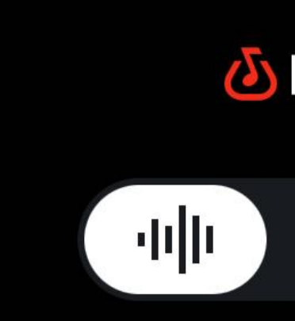
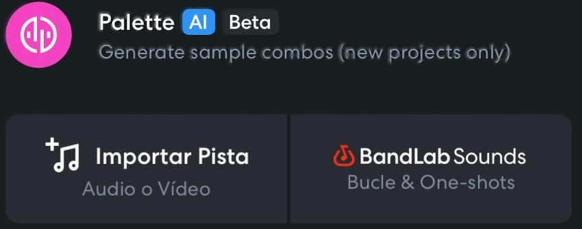

Masterclass 1: El Lienzo Sonoro y Fundamentos del Ritmo
Objetivo y Enfoque Andragógico
Objetivo: Dominar la interfaz del Mix Editor de BandLab y construir la primera base rítmica y armónica utilizando material preexistente.
Enfoque Andragógico: Aprender haciendo. Eliminamos la ansiedad del "lienzo en blanco" mediante el uso de recursos inmediatos, garantizando un resultado sonoro desde los primeros minutos.
Temario
- Navegación por el Mix Editor: Gestión de pistas, controles de transporte y panel de propiedades táctiles.
- Gestión de Tempo y Métrica: Ajuste de BPM y uso del metrónomo para mantener el pulso.
- BandLab Sounds: Filtrado, importación y manipulación de Loops y One-shots libres de derechos.
- Edición Básica: Recortar, dividir (Slice) con gestos, y ajustar a la cuadrícula (Snap to Grid).
Guía Práctica Paso a Paso (Entregable: Beat 30-60 seg)
Paso 1: Configurar el Proyecto
Abre la app de BandLab, presiona el botón rojo (+) y selecciona "Abrir Studio". Toca el ícono del metrónomo arriba a la derecha para activarlo y ajusta el BPM (Tempo) a 90 para un ritmo relajado.
Paso 2: Encontrar la Base Rítmica
Regresa a Pista

Toca el ícono (+) para añadir pista, selecciona "BandLab Sounds"
. En el buscador escribe "Drum Loop" y filtra por tu género favorito. Escucha las previas y presiona (+) para importar el que más te guste al Mix Editor.Paso 3: Añadir Armonía
Repite el proceso anterior, pero ahora busca "Piano Loop" o "Synth Chord". Asegúrate de que BandLab ajuste automáticamente el tono y la velocidad del nuevo loop para que coincida con tu ritmo.
Paso 4: Edición y Estructura (Slice)
Toca dos veces sobre la región de audio para abrir las opciones. Selecciona "Dividir" (Slice) donde quieras crear un silencio o un cambio. Usa el dedo para arrastrar los extremos de la región para recortarla. ¡Crea variaciones copiando y pegando bloques!
Evaluación Interactiva
Pregunta...
¡Cuestionario Completado!
Tu puntuación es: 0 / 10